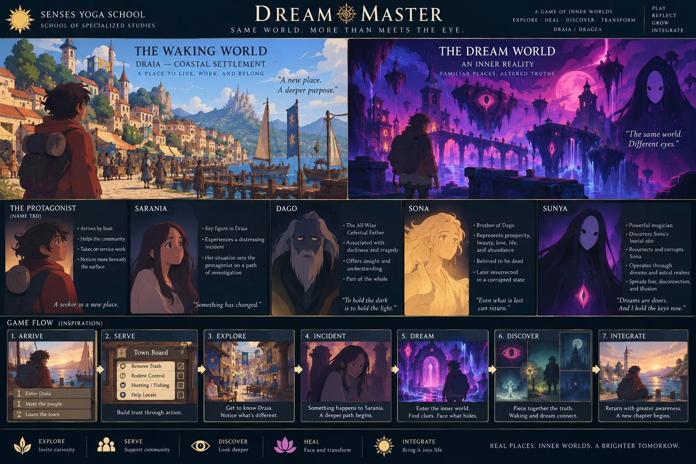
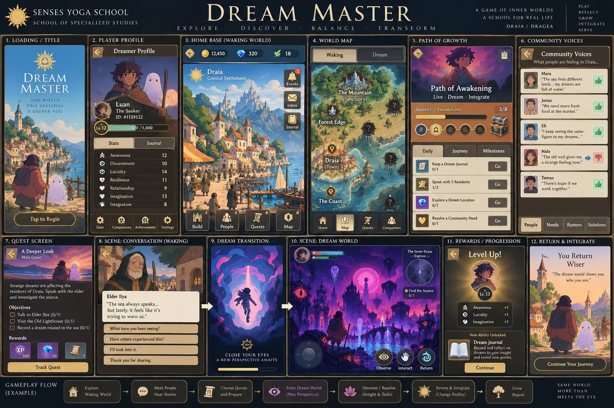

Many pathways. One living tradition.
Senses Yoga School organizes its educational ecosystem through four Schools of Practice. Each school offers a distinct doorway into embodied learning while remaining connected through practice, inquiry, relationship, and service.
Where the teachings take form.
School of Wellness
Accessible yoga education, nervous-system regulation, resilience, meditation, breathwork, community health, and lifelong wellness.
Yoga For Life is offered in public settings. Heroic Breathwork has been piloted; future series depend on a scheduled cohort. Professional wellness is arranged through separately agreed pilots.
School of Ecology
Ecological literacy, stewardship, foodways, place-based education, and YAGI as a living learning environment.
The garden is a current learning site. Foodways is active at selected events while its full staffing and curriculum develop; the OZ Lawn Care training cohort is in preparation.
School of Specialized Studies
Advanced yoga philosophy, Sanskrit, dreamwork, contemplative psychology, mythology, research, and emerging fields of inquiry.
A home for continued exploration, careful scholarship, and lifelong learning.
School of Nāṭyaśāstra & Creative Arts
The broad interdisciplinary home for creativity, culture, contemplative arts, performance, community expression, and creative game development.
Nāda Yoga / MOGA joins mantra, music, sacred sound, deep listening, movement, story, image, and performance. Creative game development extends those arts into interactive worlds, characters, choices, and forms of participatory storytelling.
Dream Connections
Dream Connections is the developing framework that brings learners, mentors, artists, neighbors, and partners from different Schools into shared projects.
It begins as a Milwaukee pilot: ideas move through conversation, mentorship, collaboration, and documented community practice. The framework connects the Schools; it is not a separate public program with open enrollment.
Explore partnership →Listen for what practice reveals.
Within the School of Nāṭyaśāstra & Creative Arts, Nāda Yoga / MOGA explores sound as a field of attention, relationship, devotion, and creative expression.
Its developing studies may include mantra, Oṃ, contemplative listening, voice, rhythm, music, sonic meditation, and the relationship between inner sound and shared culture.
Explore Nāda & Sound →Dream Master
Co-created by student David Samael and founder Luan Seguim-Arnold
An original open-world science-fiction and fantasy role-playing game exploring conscious choice, dream mastery, psychological resilience, ethical discernment, and the relationship between inner experience and the waking world.
One world. Two realities.
The player enters Draia through ordinary community life and service. Relationships, local needs, symbols, and disturbances gradually reveal a larger crisis. Nightly dream missions open a second reality where the player develops lucidity, discovers hidden patterns, and gathers insight that can change waking-world choices.
A cross-school creative work.
The School of Nāṭyaśāstra & Creative Arts supports the game’s writing, visual language, characters, world-building, sound, and interactive storytelling. The School of Specialized Studies contributes Dreamscaping, archetypal inquiry, ethics, consciousness studies, and the educational framework beneath the gameplay.


Dream Master is presently in its scene-by-scene writing and mobile concept-image phase. Characters, interface elements, mechanics, and visual designs shown here are developmental and may change as the story is written and the game system is refined.
The schools are living containers—not static departments.
Some pathways are fully active while others are still gathering faculty, curriculum, and community partnerships. Naming the complete architecture lets learners see where today’s practice belongs and what it may grow toward.